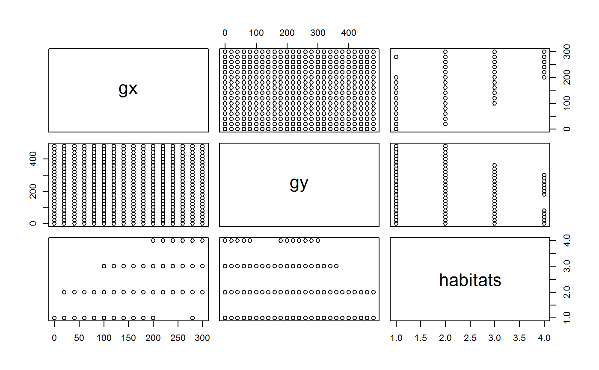

This function constructs habitat data based on elevation data. It calculates habitats in two steps:
It calculates mean elevation, convexity and slope for each quadrat (via
fgeo_topography())).
It calculates habitats based on hierarchical clustering of the topographic
metrics from step 1 (via stats::hclust()).
fgeo_habitat(elevation, gridsize, n, ...)
| elevation | One of these:
|
|---|---|
| gridsize | Number giving the size of each quadrat for which a habitat
is calculated. Commonly, |
| n | Integer. Number of cluster-groups to construct (passed to the
argument |
| ... | Arguments passed to |
A dataframe of subclass fgeo_habitat, with columns gx and gy,
rounded with accuracy determined by gridsize, and column habitats, with
as many distinct integer values as determined by the argument n.
The main input can be either the elevation list that ForestGEO delivers, or
the element col of such list -- which is a dataframe containing the
elevation data. Notice that the required arguments vary according to the main
input (the elevation list or the elevation dataframe). Whatever the input,
the dataframe containing the elevation data must have columns gx and gy
or x and y.
fgeo.map::plot.fgeo_habitat(), fgeo_topography().
Other functions to construct fgeo classes.: fgeo_elevation,
fgeo_topography
# Input a ForestGEO-like elevation list elev_list <- fgeo.data::luquillo_elevation habs <- fgeo_habitat(elev_list, n = 4, gridsize = 20) str(habs)#> Classes 'fgeo_habitat', 'tbl_df', 'tbl' and 'data.frame': 400 obs. of 3 variables: #> $ gx : num 0 0 0 0 0 0 0 0 0 0 ... #> $ gy : num 0 20 40 60 80 100 120 140 160 180 ... #> $ habitats: int 1 1 1 1 1 1 1 1 1 1 ...if (requireNamespace("fgeo.map")) { library(fgeo.map) plot(habs) }#># A good use of habitat data is for calculating species-habitat associations if (requireNamespace("fgeo.habitat")) { library(fgeo.habitat) elev_list <- fgeo.data::luquillo_elevation habitat <- fgeo_habitat(elev_list, gridsize = 20, n = 4) census <- fgeo.habitat::luquillo_top3_sp species <- unique(census$sp) to_df(tt_test(census, species, habitat)) }#>#>#>#> # A tibble: 12 x 8 #> habitat sp distribution stem_count Eq.Hab Gr.Hab Ls.Hab Obs.Quantile #> * <chr> <chr> <chr> <dbl> <dbl> <dbl> <dbl> <dbl> #> 1 1 CASARB neutral 29 2 1242 356 0.776 #> 2 1 PREMON neutral 91 3 1093 504 0.683 #> 3 1 SLOBER neutral 18 3 273 1324 0.171 #> 4 2 CASARB neutral 20 4 390 1206 0.244 #> 5 2 PREMON neutral 89 2 1254 344 0.784 #> 6 2 SLOBER neutral 24 2 810 788 0.506 #> 7 3 CASARB neutral 12 5 778 817 0.486 #> 8 3 PREMON neutral 40 3 305 1292 0.191 #> 9 3 SLOBER neutral 17 5 1155 440 0.722 #> 10 4 CASARB neutral 5 10 932 658 0.582 #> 11 4 PREMON neutral 14 8 270 1322 0.169 #> 12 4 SLOBER neutral 7 5 1292 303 0.808# If working with elevation dataframe you must provide xdim and ydim elev_df <- fgeo.data::luquillo_elevation$col hab2 <- fgeo_habitat(elev_df, gridsize = 20, n = 4, xdim = 320, ydim = 500) str(hab2)#> Classes 'fgeo_habitat', 'tbl_df', 'tbl' and 'data.frame': 400 obs. of 3 variables: #> $ gx : num 0 0 0 0 0 0 0 0 0 0 ... #> $ gy : num 0 20 40 60 80 100 120 140 160 180 ... #> $ habitats: int 1 1 1 1 1 1 1 1 1 1 ...